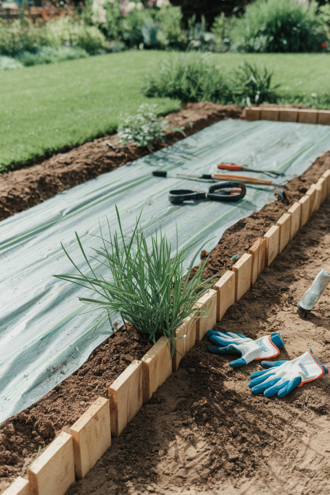
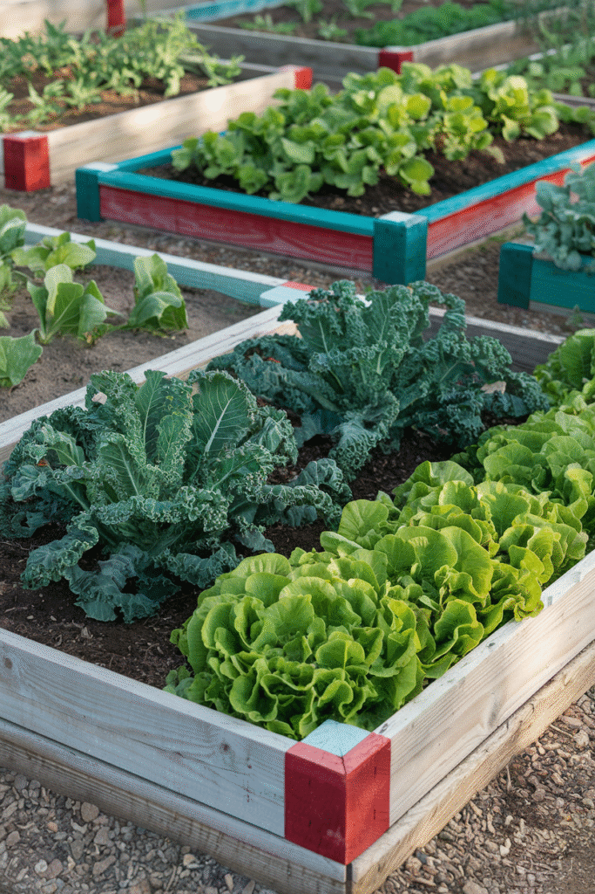
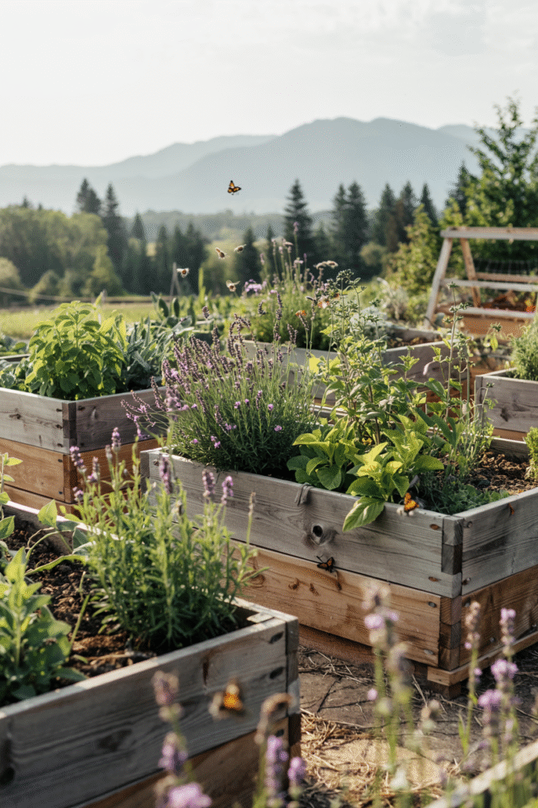
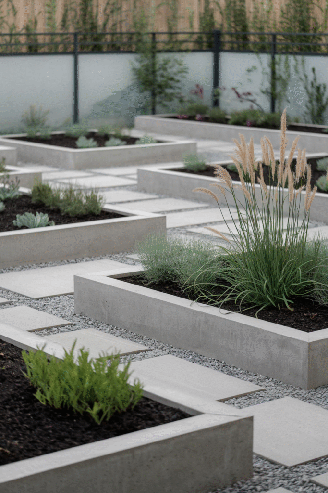
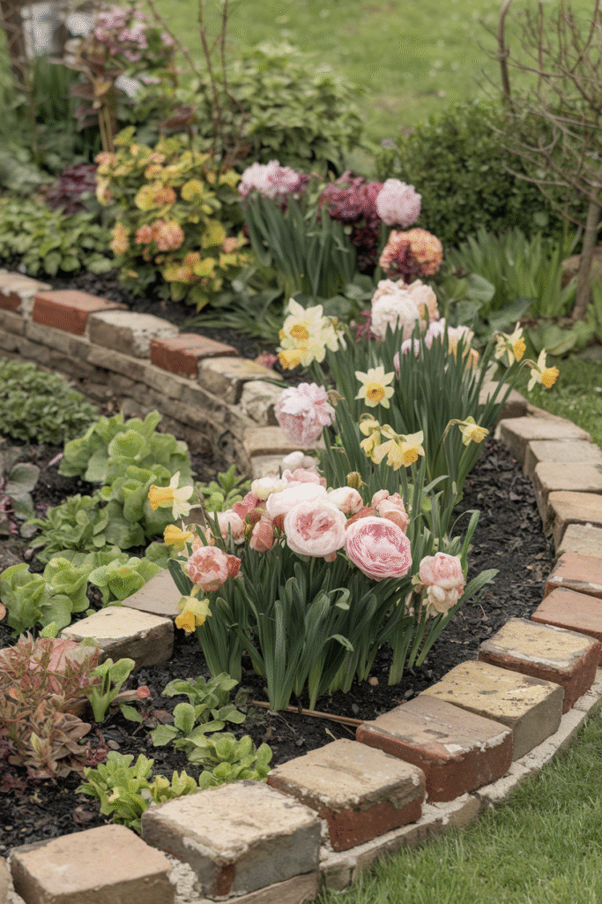
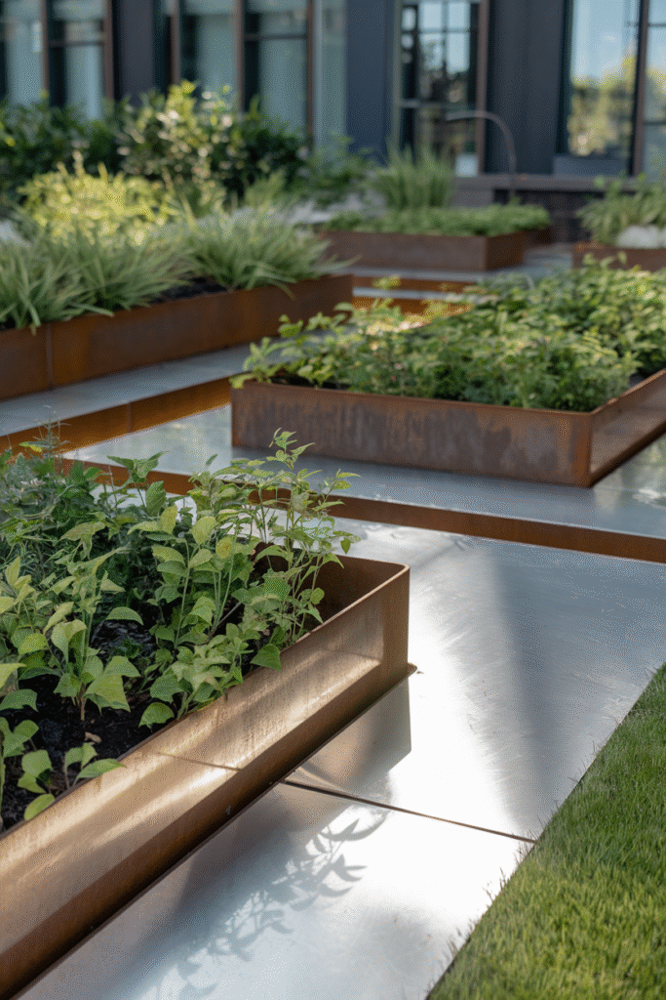
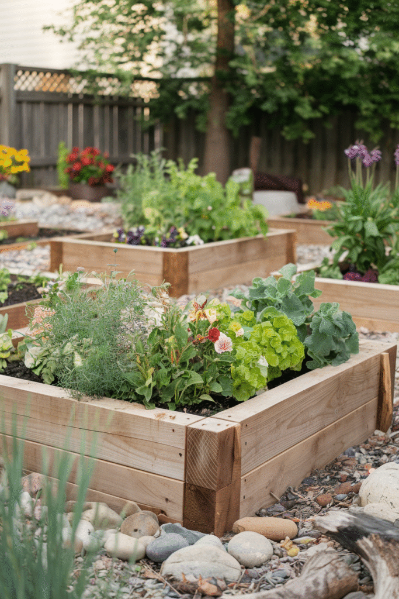

A raised bed's edging isn't a border line, it's a structural wall holding soil in place, which makes the material choice a genuinely different decision than edging a ground-level flower bed.
This covers the materials actually suited to that job, and how to pick between them for whatever the garden actually needs.

Choosing What's Right for the Garden
Budget, how long the bed needs to last, and whether it's growing food all weigh into the decision more heavily here than they would for a simple border edge.
Matching the material to the home's existing hardscaping also helps the raised bed feel like part of the yard's overall design, not a separate add-on sitting apart from everything else.

Making the Edging Last Longer
A protective sealant on wood, regular rust checks on metal, and proper drainage behind stone or concrete all extend whichever material gets chosen well past its default lifespan.
This maintenance matters more for a raised bed than it does for ground-level edging, given the material's constant exposure to damp soil on one side of it.
What Works Best for a Vegetable Garden
Untreated, food-safe wood or a non-reactive material like stone matters more for a vegetable bed specifically, since edible plants are growing in direct contact with the material itself.
This is worth checking carefully before choosing a material for any bed that will actually grow food for the table.

Living Edging With Plants
A border of low-growing plants around the raised bed's base softens its structural lines and adds a layer of greenery hard materials simply can't provide on their own.
This works best as a complement to a hard-material wall, rather than as the bed's actual structural edge doing the load-bearing work.
Reclaimed and Upcycled Materials
Old bricks, reclaimed wood, or repurposed metal all bring genuine character while keeping the project both budget-friendly and noticeably more sustainable.
This option requires more hunting and planning than simply buying new material, but it often produces the most visually interesting result on this entire list.

Concrete
Concrete blocks or poured concrete create an extremely durable, low-maintenance raised bed wall that handles weather and soil pressure better than almost any other material available.
This works especially well for a larger raised bed, where the structural demands placed on the edging material are genuinely greater.

Stone and Brick
Stone or brick brings genuine permanence and a built-to-last quality that few other materials can really match for a raised structure.
This is a bigger upfront investment, both in cost and labor, but one that essentially never needs replacing once it's properly installed.

Metal
Metal edging brings a sleek, modern look along with genuine durability that outlasts most wood options by a wide margin.
A rust-resistant coating or an inherently corrosion-resistant metal matters more for a raised bed than it would for ground-level edging, given the sustained contact with damp soil over time.

Classic Wood
Wood remains the most popular choice for genuinely good reason, it's affordable, easy to work with, and brings real warmth to the garden overall.
Rot-resistant species like cedar last considerably longer than standard lumber, which matters more here than it would for a purely decorative edge somewhere else in the yard.

Why Raised Bed Edging Actually Matters
Beyond containing soil, the right edging material protects the structure from rot, pests, and weather, which directly affects how many years the bed actually ends up lasting.
This is a functional decision first and a styling one second, unlike edging for a ground-level bed where the stakes involved are considerably lower.
Make Your Garden Beds Pop
None of these materials is universally correct for every raised bed out there.
Weigh durability, budget, and whether the bed is growing food, then choose accordingly, the right material turns a simple soil container into a genuine garden feature worth noticing.